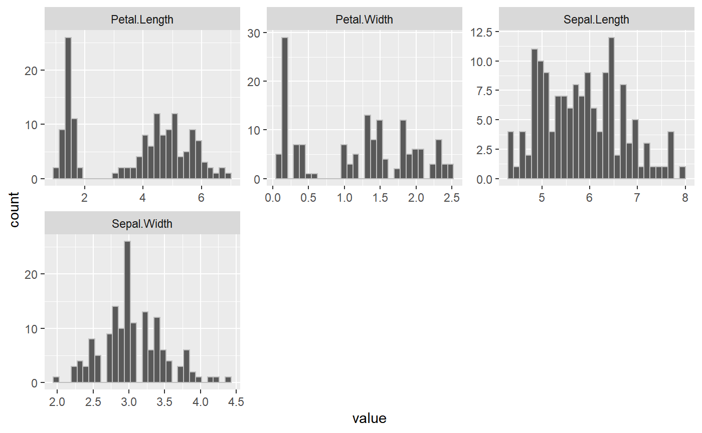
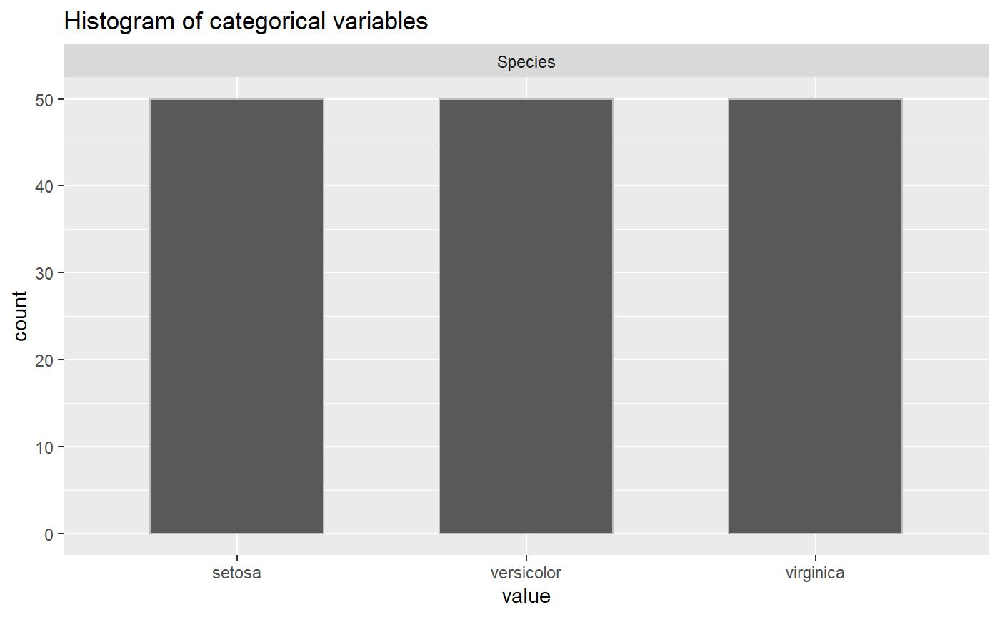

Exploratory Data analysis is an important step in any data analysis. There are some general steps like describing the data, knowing NA values and plotting the distributions of the variables which are performed to understand the data well. All these tasks require a lot of coding effort. The package tries to address this issue by providing a single function which will generate a general exploratory data analysis report.
The edar data analysis report contains the following five functions:
calc_cor: This function takes in a data frame and numeric variable names and returns the correlation matrix for numerical variables.describe_na_values: This function takes in a data frame and returns a table listing with the number of NA values in each feature.describe_cat_var: This function takes in a data frame and categorical variable names and returns the histogram of each categorical variable.describe_num_var: This function takes in a data frame and numerical variable names and returns the histogram of each numerical variable and summary statistics such as the mean, median, maximum and minimum for the numeric variables.generate_report: This is a wrapper function which generates an EDA report by plotting graphs and tables for the numeric variables, categorical variables, NA values and correlation in a data frame.
This document will walk through an example problem to increase the understanding of the role of these functions to generate an exploratory data analysis report.
Install and Load the Package
You can download, build and install this package from GitHub with:
devtools::install_github("UBC-MDS/edar")
You can load the package with:
library(edar)
# The packages below are used to set up the example dataset
library(dplyr)
#>
#> Attaching package: 'dplyr'
#> The following objects are masked from 'package:stats':
#>
#> filter, lag
#> The following objects are masked from 'package:base':
#>
#> intersect, setdiff, setequal, union
library(tidyr)Data: Iris
This example uses a built-in R dataset known as iris to show the use of our edar package. There is five features in the iris dataset: Sepal.Length, Sepal.Width, Petal.Length, Petal.Width and Species. Iris automatically loads as a data.frame, but if your data is not a dataframe, you will need to convert it to a data.frame or tibble using the data.frame() or tibble() function. For further details, see the instructions for data.frame() and tibble().
library(datasets)
dim(iris)
#> [1] 150 5
is.data.frame(iris)
#> [1] TRUE
head(iris)
#> Sepal.Length Sepal.Width Petal.Length Petal.Width Species
#> 1 5.1 3.5 1.4 0.2 setosa
#> 2 4.9 3.0 1.4 0.2 setosa
#> 3 4.7 3.2 1.3 0.2 setosa
#> 4 4.6 3.1 1.5 0.2 setosa
#> 5 5.0 3.6 1.4 0.2 setosa
#> 6 5.4 3.9 1.7 0.4 setosaUsing edar to Explore the Data
There is 150 rows of data in the Iris dataset with 5 columns.
Questions that might arise before you do any analysis are:
How do we know that all the values are there?
Is there any outliers that need to be dealt with?
How many categories of data are there?
Are the features correlated?
This package looks at answering the questions by exploring the different features and the values of the dataset.
Identify Column Types
For the package to work, users need to manually specify which columns are numeric and which columns are categorical. Numeric columns should only contain numerical values while categorical variables can be intergers specifying values (1- Yes, 2 - No) or strings. All the features in Iris except for Species are numerical varaibles and Species is a categorical variable.
1. Find the Distribution of the Numeric Variables (describe_num_var)
The first function run in the report is finding the distribution of numerical variables. Often in exploratory data analysis (EDA), the first step is to look at your data. This package splits up looking at your data to first look at numeric variables. This function takes a dataframe and numerical variable names and will plot the histogram of each numerical variable as well as return a dataframe with the summary values. The use to to find the range of values for a feature as well as the quantiles, minimum, maximum, mean and standard deviation.
In the Iris example, we are able to identify if there are any outliers in the data as well as the distributions. The iris dataset is clean and the values look reasonable for further analysis.
options(tidyverse.quiet = TRUE,
repr.plot.width = 10,
repr.plot.height = 10)
describe_num_var(iris, numerical_variables)
#> $summary
#> # A tibble: 7 x 5
#> summary Sepal.Length Sepal.Width Petal.Length Petal.Width
#> <chr> <chr> <chr> <chr> <chr>
#> 1 25% 5.1 2.8 1.6 0.3
#> 2 75% 6.4 3.3 5.1 1.8
#> 3 min 4.3 2 1 0.1
#> 4 max 7.9 4.4 6.9 2.5
#> 5 median 5.8 3 4.35 1.3
#> 6 mean 5.843 3.057 3.758 1.199
#> 7 sd 0.828 0.436 1.765 0.762
#>
#> $plot
2. Find the Distribution of the Categorical Variables (describe_cat_var)
The function describe_cat_var works similar to describe_num_var except inspects the categorical variables. Since there is no summary statistics like mean, min, and standard deviation, this function will take dataframe and categorical variable names and will plot the histogram of each categorical variable. In the Iris example, the Species category is equally distributed between the three different species.

3. Find the Count of NA Values (describe_na_values)
describe_na_values takes in dataframe and will give a table listing number of NA values in each feature. NAs can often produce errors in data analysis, therefore idenitfying any NA values is important in the EDA process. Each column in the output corresponds to the same column in dataframe and each value inside the column is 0 if the corresponding value is NA, 1 otherwise. In the Iris example, there are no 0’s meaning there are no NA values in the data.
describe_na_values(iris)
#> $Sepal.Length
#> [1] 1 1 1 1 1 1 1 1 1 1 1 1 1 1 1 1 1 1 1 1 1 1 1 1 1 1 1 1 1 1 1 1 1 1 1 1 1
#> [38] 1 1 1 1 1 1 1 1 1 1 1 1 1 1 1 1 1 1 1 1 1 1 1 1 1 1 1 1 1 1 1 1 1 1 1 1 1
#> [75] 1 1 1 1 1 1 1 1 1 1 1 1 1 1 1 1 1 1 1 1 1 1 1 1 1 1 1 1 1 1 1 1 1 1 1 1 1
#> [112] 1 1 1 1 1 1 1 1 1 1 1 1 1 1 1 1 1 1 1 1 1 1 1 1 1 1 1 1 1 1 1 1 1 1 1 1 1
#> [149] 1 1
#>
#> $Sepal.Width
#> [1] 1 1 1 1 1 1 1 1 1 1 1 1 1 1 1 1 1 1 1 1 1 1 1 1 1 1 1 1 1 1 1 1 1 1 1 1 1
#> [38] 1 1 1 1 1 1 1 1 1 1 1 1 1 1 1 1 1 1 1 1 1 1 1 1 1 1 1 1 1 1 1 1 1 1 1 1 1
#> [75] 1 1 1 1 1 1 1 1 1 1 1 1 1 1 1 1 1 1 1 1 1 1 1 1 1 1 1 1 1 1 1 1 1 1 1 1 1
#> [112] 1 1 1 1 1 1 1 1 1 1 1 1 1 1 1 1 1 1 1 1 1 1 1 1 1 1 1 1 1 1 1 1 1 1 1 1 1
#> [149] 1 1
#>
#> $Petal.Length
#> [1] 1 1 1 1 1 1 1 1 1 1 1 1 1 1 1 1 1 1 1 1 1 1 1 1 1 1 1 1 1 1 1 1 1 1 1 1 1
#> [38] 1 1 1 1 1 1 1 1 1 1 1 1 1 1 1 1 1 1 1 1 1 1 1 1 1 1 1 1 1 1 1 1 1 1 1 1 1
#> [75] 1 1 1 1 1 1 1 1 1 1 1 1 1 1 1 1 1 1 1 1 1 1 1 1 1 1 1 1 1 1 1 1 1 1 1 1 1
#> [112] 1 1 1 1 1 1 1 1 1 1 1 1 1 1 1 1 1 1 1 1 1 1 1 1 1 1 1 1 1 1 1 1 1 1 1 1 1
#> [149] 1 1
#>
#> $Petal.Width
#> [1] 1 1 1 1 1 1 1 1 1 1 1 1 1 1 1 1 1 1 1 1 1 1 1 1 1 1 1 1 1 1 1 1 1 1 1 1 1
#> [38] 1 1 1 1 1 1 1 1 1 1 1 1 1 1 1 1 1 1 1 1 1 1 1 1 1 1 1 1 1 1 1 1 1 1 1 1 1
#> [75] 1 1 1 1 1 1 1 1 1 1 1 1 1 1 1 1 1 1 1 1 1 1 1 1 1 1 1 1 1 1 1 1 1 1 1 1 1
#> [112] 1 1 1 1 1 1 1 1 1 1 1 1 1 1 1 1 1 1 1 1 1 1 1 1 1 1 1 1 1 1 1 1 1 1 1 1 1
#> [149] 1 1
#>
#> $Species
#> [1] 1 1 1 1 1 1 1 1 1 1 1 1 1 1 1 1 1 1 1 1 1 1 1 1 1 1 1 1 1 1 1 1 1 1 1 1 1
#> [38] 1 1 1 1 1 1 1 1 1 1 1 1 1 1 1 1 1 1 1 1 1 1 1 1 1 1 1 1 1 1 1 1 1 1 1 1 1
#> [75] 1 1 1 1 1 1 1 1 1 1 1 1 1 1 1 1 1 1 1 1 1 1 1 1 1 1 1 1 1 1 1 1 1 1 1 1 1
#> [112] 1 1 1 1 1 1 1 1 1 1 1 1 1 1 1 1 1 1 1 1 1 1 1 1 1 1 1 1 1 1 1 1 1 1 1 1 1
#> [149] 1 14. Find the Correlation (calc_cor)
The function calc_cor takes in dataframe and will plot correlation matrix of the features. Identifying correlation is important in the EDA process, espeacially for identifying features for conducting regression analysis. The function returns a correlation matrix plot labelled with the correlation coefficients of -1 to 1 between each numeric column and other numeric columns in the dataframe. In the Iris example, there is values close to one for the correlation between Petal.Length and Petal.Width meaning that doing an analysis like regression with these two features will result in a low adjusted R-squared.

Putting it all together: Generate Report (generate_report)
All the functions in this package work together to give insights about the data before conducting an analysis. The package has a wrapper function that pulls the other functions all together for a simple report that outputs all the EDA analysis. The function generates an EDA report by plotting graphs and tables for the numeric variables, categorical variables, NA values and correlation in a dataframe.
generate_report(iris, categorical_Variables, numerical_variables)
#> [[1]]
#> [[1]]$summary
#> # A tibble: 7 x 5
#> summary Sepal.Length Sepal.Width Petal.Length Petal.Width
#> <chr> <chr> <chr> <chr> <chr>
#> 1 25% 5.1 2.8 1.6 0.3
#> 2 75% 6.4 3.3 5.1 1.8
#> 3 min 4.3 2 1 0.1
#> 4 max 7.9 4.4 6.9 2.5
#> 5 median 5.8 3 4.35 1.3
#> 6 mean 5.843 3.057 3.758 1.199
#> 7 sd 0.828 0.436 1.765 0.762
#>
#> [[1]]$plot#>
#>
#> [[2]]#>
#> [[3]]
#> [[3]]$Sepal.Length
#> [1] 1 1 1 1 1 1 1 1 1 1 1 1 1 1 1 1 1 1 1 1 1 1 1 1 1 1 1 1 1 1 1 1 1 1 1 1 1
#> [38] 1 1 1 1 1 1 1 1 1 1 1 1 1 1 1 1 1 1 1 1 1 1 1 1 1 1 1 1 1 1 1 1 1 1 1 1 1
#> [75] 1 1 1 1 1 1 1 1 1 1 1 1 1 1 1 1 1 1 1 1 1 1 1 1 1 1 1 1 1 1 1 1 1 1 1 1 1
#> [112] 1 1 1 1 1 1 1 1 1 1 1 1 1 1 1 1 1 1 1 1 1 1 1 1 1 1 1 1 1 1 1 1 1 1 1 1 1
#> [149] 1 1
#>
#> [[3]]$Sepal.Width
#> [1] 1 1 1 1 1 1 1 1 1 1 1 1 1 1 1 1 1 1 1 1 1 1 1 1 1 1 1 1 1 1 1 1 1 1 1 1 1
#> [38] 1 1 1 1 1 1 1 1 1 1 1 1 1 1 1 1 1 1 1 1 1 1 1 1 1 1 1 1 1 1 1 1 1 1 1 1 1
#> [75] 1 1 1 1 1 1 1 1 1 1 1 1 1 1 1 1 1 1 1 1 1 1 1 1 1 1 1 1 1 1 1 1 1 1 1 1 1
#> [112] 1 1 1 1 1 1 1 1 1 1 1 1 1 1 1 1 1 1 1 1 1 1 1 1 1 1 1 1 1 1 1 1 1 1 1 1 1
#> [149] 1 1
#>
#> [[3]]$Petal.Length
#> [1] 1 1 1 1 1 1 1 1 1 1 1 1 1 1 1 1 1 1 1 1 1 1 1 1 1 1 1 1 1 1 1 1 1 1 1 1 1
#> [38] 1 1 1 1 1 1 1 1 1 1 1 1 1 1 1 1 1 1 1 1 1 1 1 1 1 1 1 1 1 1 1 1 1 1 1 1 1
#> [75] 1 1 1 1 1 1 1 1 1 1 1 1 1 1 1 1 1 1 1 1 1 1 1 1 1 1 1 1 1 1 1 1 1 1 1 1 1
#> [112] 1 1 1 1 1 1 1 1 1 1 1 1 1 1 1 1 1 1 1 1 1 1 1 1 1 1 1 1 1 1 1 1 1 1 1 1 1
#> [149] 1 1
#>
#> [[3]]$Petal.Width
#> [1] 1 1 1 1 1 1 1 1 1 1 1 1 1 1 1 1 1 1 1 1 1 1 1 1 1 1 1 1 1 1 1 1 1 1 1 1 1
#> [38] 1 1 1 1 1 1 1 1 1 1 1 1 1 1 1 1 1 1 1 1 1 1 1 1 1 1 1 1 1 1 1 1 1 1 1 1 1
#> [75] 1 1 1 1 1 1 1 1 1 1 1 1 1 1 1 1 1 1 1 1 1 1 1 1 1 1 1 1 1 1 1 1 1 1 1 1 1
#> [112] 1 1 1 1 1 1 1 1 1 1 1 1 1 1 1 1 1 1 1 1 1 1 1 1 1 1 1 1 1 1 1 1 1 1 1 1 1
#> [149] 1 1
#>
#> [[3]]$Species
#> [1] 1 1 1 1 1 1 1 1 1 1 1 1 1 1 1 1 1 1 1 1 1 1 1 1 1 1 1 1 1 1 1 1 1 1 1 1 1
#> [38] 1 1 1 1 1 1 1 1 1 1 1 1 1 1 1 1 1 1 1 1 1 1 1 1 1 1 1 1 1 1 1 1 1 1 1 1 1
#> [75] 1 1 1 1 1 1 1 1 1 1 1 1 1 1 1 1 1 1 1 1 1 1 1 1 1 1 1 1 1 1 1 1 1 1 1 1 1
#> [112] 1 1 1 1 1 1 1 1 1 1 1 1 1 1 1 1 1 1 1 1 1 1 1 1 1 1 1 1 1 1 1 1 1 1 1 1 1
#> [149] 1 1
#>
#>
#> [[4]]
#> [1] TRUE